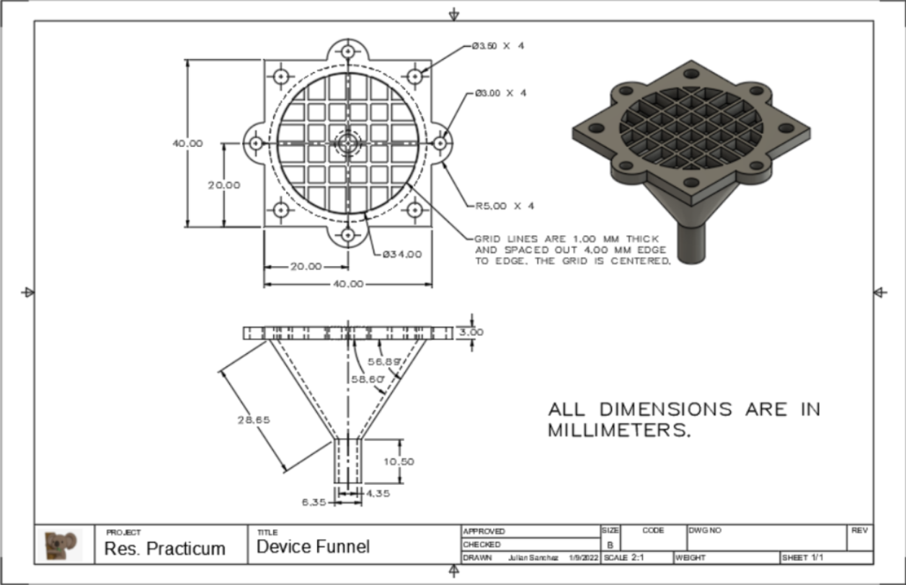
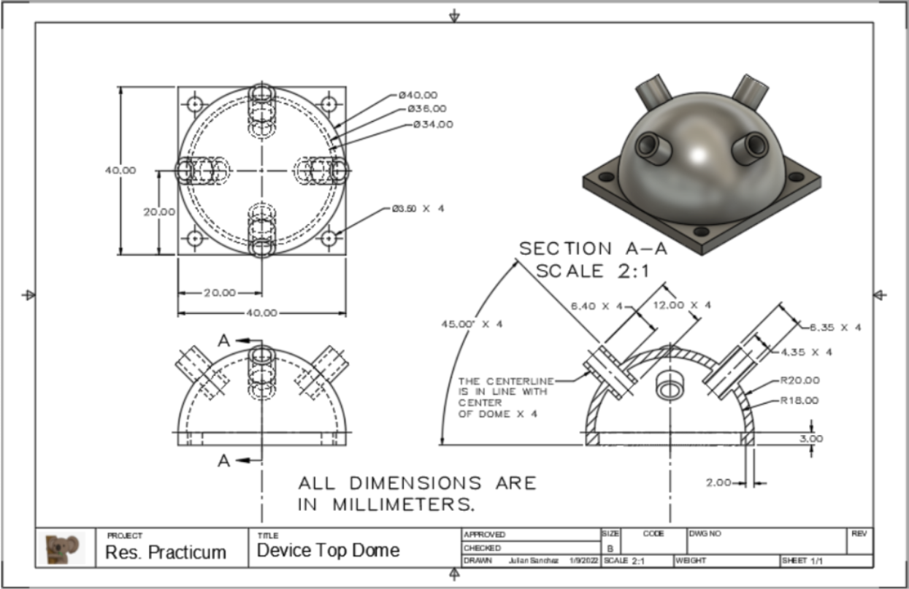
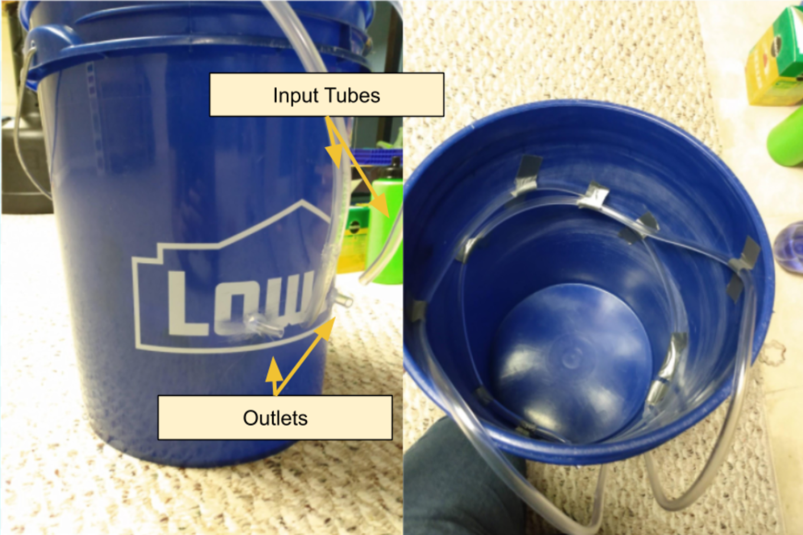
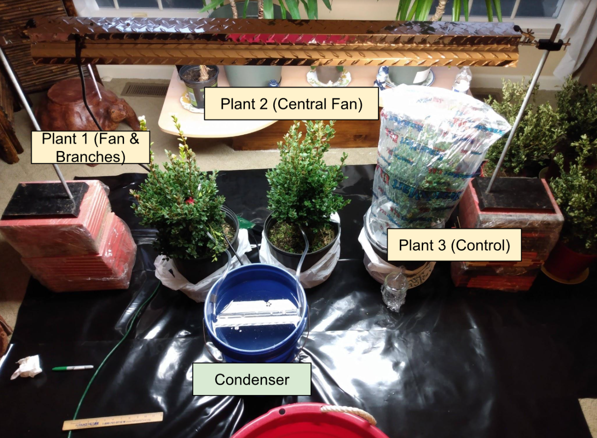
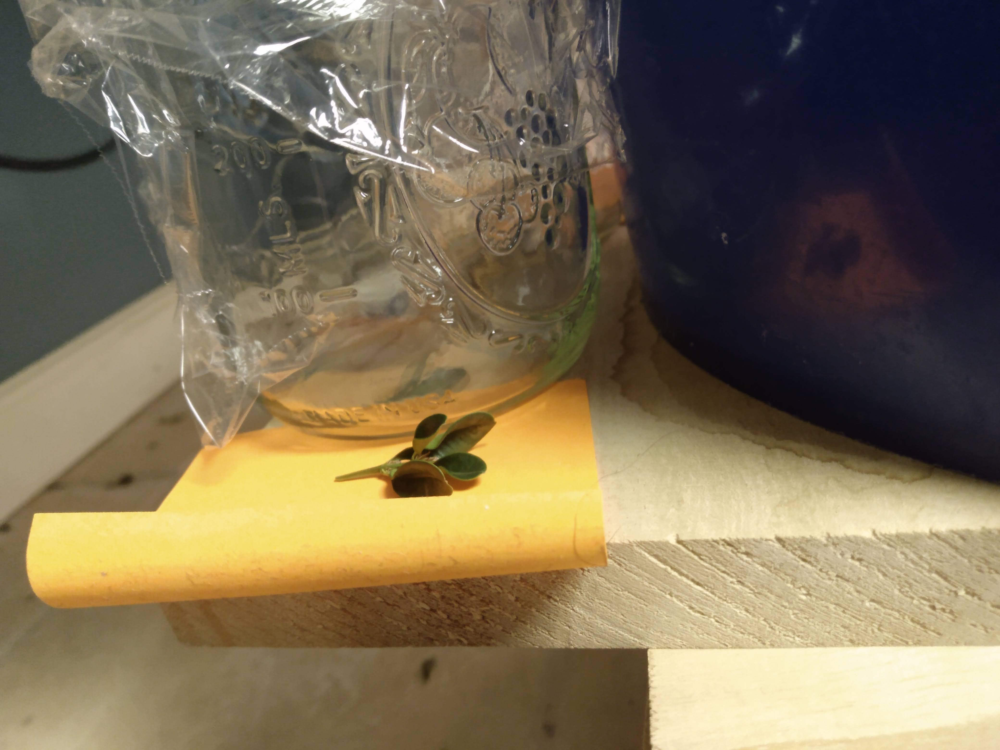

- 3D print two bottom components and one top component.
- Take one bottom component and affix it to one of the small computer fans.
- Affix the other pieces to the other computer fan on opposite sides.
- Make sure that the fan is sucking into the funnel. For the device with the top component, attach 4 short pieces of vinyl tubing to the protrusions, around 2" each.


- Measure and cut two 42" lengths of 1/4" vinyl tubing.
- Drill two 1/4" holes into a 5-gallon bucket around 5" above the base.
- Construct the condenser by using duct tape to affix the vinyl tubing to the sides of the bucket in opposite helical patterns.
- Thread the tubing through the drilled holes.
- Leave around 12" of tubing per tube off the top.
- Use hot glue to seal the drilled holes with the tubing.
- Fill the condenser with cold water.

- Place the setup in an area with windows and natural sunlight.
- Suspend a grow light over three Green Mountain Boxwood plants.
- Set the grow light on a timer from 7:00AM to 6:00PM.
- Connect the condenser tubes to the devices.
- Suspend the devices in the plants.
- Connect the devices' power cables to the timer.
- Position containers under the outlets of the condensers. Cover with plastic wrap to reduce evaporation.
- Water plants daily.

- Using an eyedropper, record amount of water collected, in milliliters, twice a day, at noon and 6:00PM.
